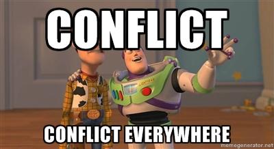

Two weeks down, seven to go...
posted on July 25, 2014
It has been far too long since my last post and it isn't because I've been crazy busy...which I have been, but more that my exhaustion level after a day at DBC is so high that I just want to unwind at the end of the day.
This week consisted of a mock-assessment to properly analyze our status with the material at this point and mine went pretty well. The days are packed with excitement, frustration, enlightenment, fear and possibly all ranges of emotions you could think of. We have lectures, emotional empathy training, stand-ups, pairing sessions, assessments, code reviews and many other new things every day. My time has been so fulfilling thus far and I am extremely eager to get up every morning and start a new day at DBC.
My Chicago life has been pretty awesome thus far as well. I have had Portillo's like 4 times and have no plans on slowing down. I wish I had more time to see more of the city and go out and about but my addiction to learning doesn't allow me much escape.
I'm now realizing this blog post is jumping all over the place, and I apologize for that. I, in conclusion, wanted to write a little about things I've learned thus far. Some key points are object oriented design, data parsing and command line arguments. It is a little odd to realize we are spending so much time in the command line when in just 1 short week, we will jump heavily into the web but the building blocks are essential. The programs I'm writing now are so much more sophisticated and complex than anything I've done to before today and could not be happier about it. I'll look at a snippet of my code for parsing CSV data.
def read_file
return @list if @list
@list = []
CSV.foreach('todo.csv') do |item|
@list << Task.new(item)
end
end
Two weeks ago, I wouldn't have exactly known what was going on on the above code and I'll try and explain as best I can here. First I am using the CSV class for Ruby so I will need to require it at the top of my document. Then, I have a method called read_file that takes no parameters.
The next line is basically a little "only run this method one time" check. It will return the list of a list exists. It is a little check trick I learned here at DBC. @list is a class variable as can be denoted by the @ symbol. You don't know it from this snippet but I have initialized this class with @list = nil. That is our way of making the return line work. The first check is saying return @list if it exists, and since we set it to nil, it doesn't.
CSV.foreach('todo.csv') do |item|
@list << Task.new(item)
end
This line is where all the magic happens. To learn a bit more about the Ruby CSV class, click here. So this is calling the CSV class and running a foreach on it by passing the parameter of a filename to it. The do |item| snippet is a way of running the method iteratively and return the block of code for each line that .foreach returns.
The method takes a CSV file, parses each line, and returns the line into a new Task object. I didn't do the best job explaining this, I can tell, but it makes total sense to me. I'm excited that I'm learning-and learning so fast.
Ask away
posted on July 13, 2014
The art of asking a 'good question' is quickly becoming a very important aspect of my coding thus far. I often find myself searching the Internet for an answer to a puzzling question re our DBC prep work thus far. It would be easy to search the question in its entirety but that would just give you results that tell you the entire answer and not how to get there.
I have asked countless questions in my life thus far and can only imagine that number will continuously grow. I haven't really written down a lot of questions so I went to stackoverflow to seek out a question to review and here is what I found.
Ruby Basic authentication
I want to build an application that will be making a request to twitter search api using the basic authentication method. In my searches, I came across this following piece of code using rest-client package:
resource = RestClient::Resource.new('http://example.com', :user => 'user', :password => 'password')
however it returned 'bad request: 400'
Can anyone advise?
First, I think the title doesn't at all build into what the question is, and is a little misleading. That is an immediate turn off from this question to anyone that may be of help with authentication or vice versa. The question, itself is detailed and provides a lot of helpful insight for people looking to answer it. The asker is specific and really delves into what they are looking for.
The big issue with this question is that they don't provide any output for their error here so the first poster found that and asked a new question in response. If the output posts here and the user community is able to post an answer, the asker would have been better positioned had they responded with that initially.
Active Record
posted on July 6, 2014
Wo-hoo! Active record! While one would not regularly address something such as Active Record with such excitement and enthusiasm, it is extremely important to the Model-View-Controller (MVC) model which Ruby relies on. Active record handles the transformation of data from a database, such as a SQL table, to a Ruby object.
The great thing about Active Record is that you can bypass SQL statements and queries by just using ActiveRecord to map the database row and perform the function for you. And then you can create models to represent table rows and headings.
As an example, we can go through a table for a user profile.
class Users < ActiveRecord::Base
end
This assigns the Users class to the table of the same name. Now, however the table was created, we can call methods from the class, after creating a new one based on our table schema.
CREATE TABLE users (
id int NOT NULL auto_increment,
username varchar(255),
email varchar(255),
age int
);
From that SQL table we can now call all these elements after making a new class from our ActiveRecord class above.
user1 = Users.new
user1.name = "John Smith"
user1.email = "jsmith@jsmith.com
user1.age = 25
Now when we call these elements, they will populate from the database we setup. Following the CRUD method, which is Create, Read, Update, Delete - modifications can be made the table and actions cal be called as it is stored in an array type object that can be iterated and what have you.
"a serious disagreement or argument, typically a protracted one."
posted on July 6, 2014

That is the definition of a conflict, according to Google. I experience a conflict at work on a daily basis. It is the nature of working with so many different people at any given time. Opinions will differ, ideas will clash and that is the nature of the beast.
Personal conflict
A typical conflict is the difference of personal taste. As a designer, we have developed our own taste in items and believe that is the end all situation in a lot of cases. Well, we aren't the only ones that see things this way. A lot of our clients have an idea in their mind of what they want an end product to look like so when it isn't exactly that, heads will clash.
Source of the conflict
The source of one typical conflict was that what I believed was a good design wasn't the same as what my client believed was a good design for the specified project.
How was it handled?
I handle most all of my conflicts at work the same way; as they are the client and I am, essentially, designing the piece for them I try to make my case and accept that their decision is final. For the specific conflict I recommended a certain layout for a piece, bringing emphasis to an area of the print material that I felt was important but the client thought overshadowed what they believed was the main concern. So, in the end, I did what the client asked and they were happy.
How did my actions affect the conflict?
Well, I think my actions made that specific conflict better but in the long run it has an adverse affect on my ability to sell my point. As a constant push-over, my opinion is heard I'm sure, but my customers probably know that I will give them what they want, even if I think it isn't a great product.
Looking forward
Things I really want to do moving forward are to be more assertive in my ideas and my skills as a professional and make stronger cases for what I think may be useful/effective in the world that is my profession. Going back I wouldn't really change much as the client was happy and the job got done on time, however. Also, in a deadline driven field, sometimes you don't have time to argue your point with someone that isn't willing to 'see it your way'.